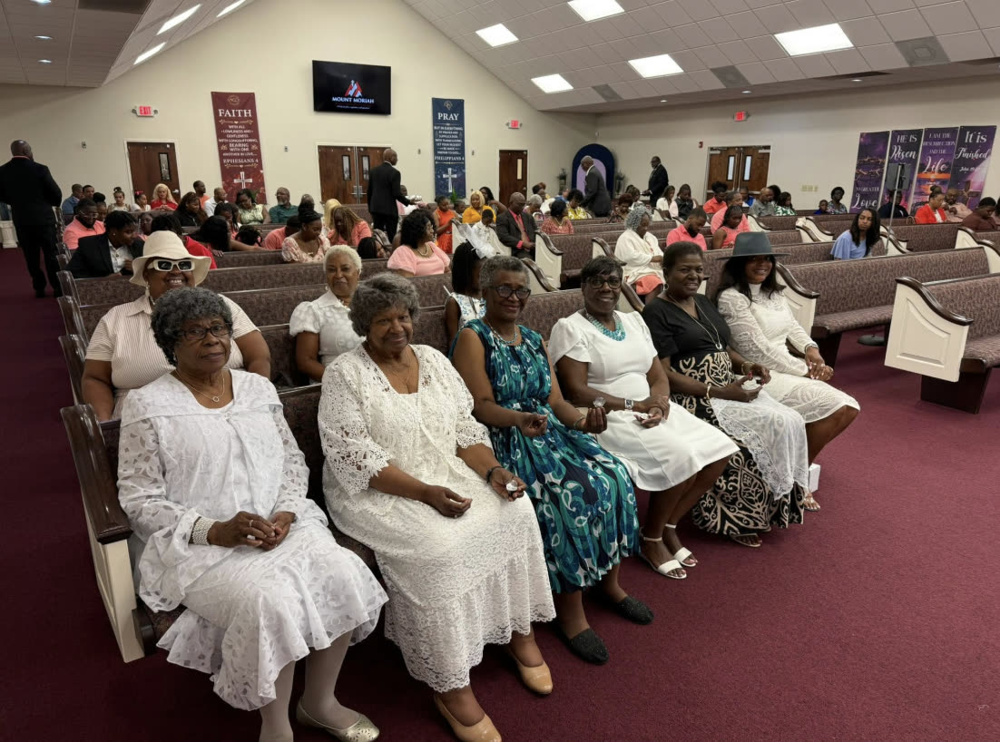
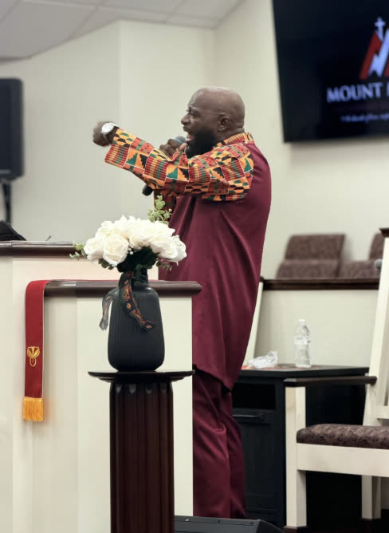
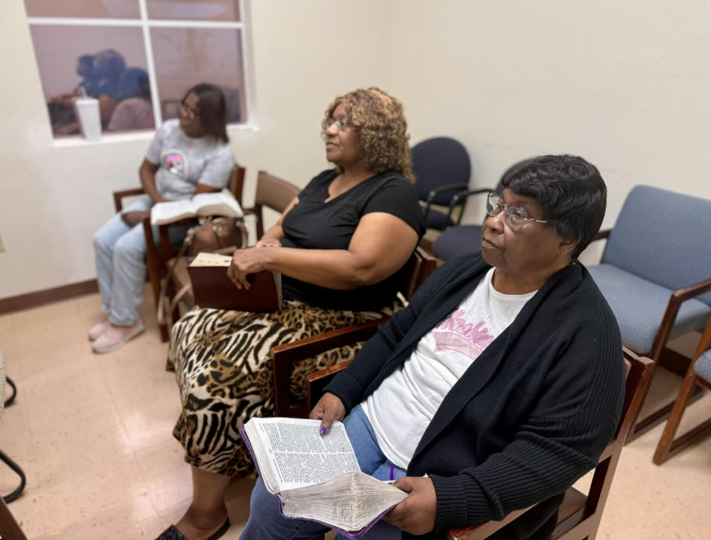

Mount Moriah Missionary Baptist Church
Our History
Mount Moriah Missionary Baptist Church was built upon an enduring conviction: that the Gospel of Jesus Christ has the power to transform lives, strengthen families, and shape generations.
What began as a gathering of faithful believers has grown into a vibrant church family committed to worship, discipleship, fellowship, and service. Through every season of growth and transition, God has remained faithful, guiding the church, sustaining its people, and expanding its impact within the community.
Our story has been shaped by devoted leaders, committed members, and generations of men and women who believed in the mission of the local church. Their prayers, sacrifices, and faithful service established a spiritual foundation that continues to carry Mount Moriah forward today.
As we honor those who came before us, we are equally committed to the generations still to come. Our history is more than a record of where we have been. It is a testimony to the God who has carried us and a reminder that our greatest days of ministry are still ahead.
The story of Mount Moriah continues as we remain rooted in faith, united in love, and committed to making Christ known.




Our Mission
We exist to glorify God by leading people to Jesus Christ, making disciples, strengthening families, and serving our community through biblical teaching, authentic worship, loving fellowship, and compassionate service.
Our Vision
We envision a Christ-centered church where lives are transformed, faith is strengthened, families are empowered, and communities experience the love, hope, and restoring power of Jesus Christ.
Our Shepherds
Welcome to Mount Moriah Missionary Baptist Church. We are honored to welcome you into a community of believers united by faith, strengthened through fellowship, and committed to following Jesus Christ together.
Mount Moriah is more than a place to attend. It is a place to belong, grow, and serve. Our desire is to cultivate an environment where individuals and families can encounter God, develop meaningful relationships, and become firmly rooted in His Word.
Through worship, biblical teaching, prayer, discipleship, and service, we are committed to equipping people to live out their faith with confidence and make a meaningful difference in their homes, workplaces, and communities.
Whether you have followed Christ for many years, are returning to church, or are simply searching for answers, you are welcome here. There is room for your story, your gifts, and your family at Mount Moriah.
We invite you to worship with us, grow with us, and discover the purpose God has for your life. We look forward to welcoming you personally and walking alongside you as we grow together in Christ.
Welcome home.
Join us Sunday: Sunday School at 10:00 AM, Morning Worship at 11:00 AM.